Meet the Officers
John Mistele:
Co-President

John Mistele is a senior at Ransom Everglades School. He began competing in MathCounts in seventh grade and competed at ARML with FLSAM the following year. Awed by the tremendous intellect and welcoming atmosphere he saw there, John has since participated as fully as possible in FLSAM, and hopes to contribute to the continued success of the team. John has competed in the AMCs, HMMT, PUMaC, CMIMC, FAMAT, USAMTS, OMO, FML (no, really), FAU Math Day, and the Essner. He finds combinatorics and geometry particularly beautiful, and he enjoys sharing his favorite problems with younger math enthusiasts and his peers. Besides mathematics, John enjoys programming, ceramics, volleyball, and learning to play "Legend of Zelda" tunes on the piano from his older brother.
Kim Nguyen: Co-President, Region 2 Coordinator
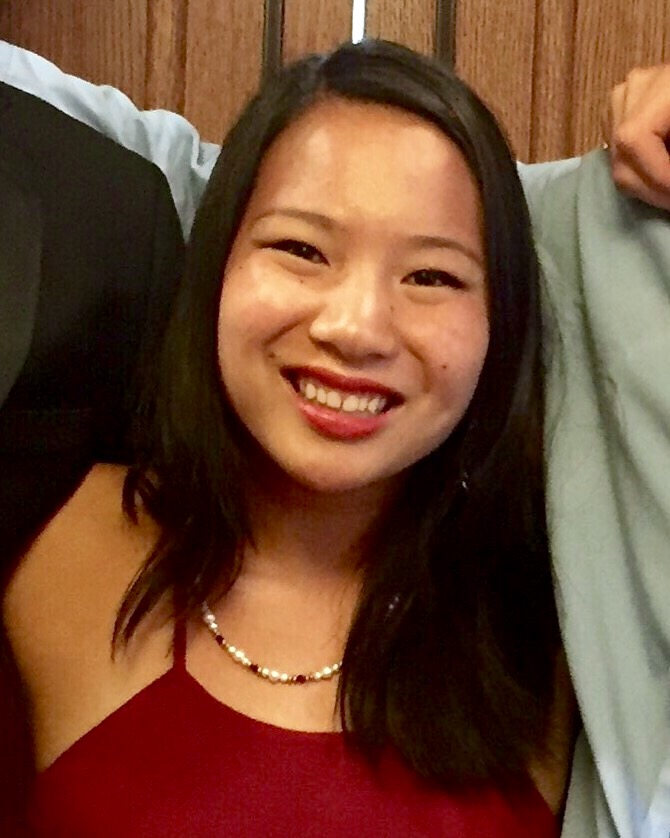
Kim Nguyen is a senior at Buchholz, but is occasionally associated with the Kim Nguyen Academy for Independent Studies and Enlightenment.
Kim is a potgut enthusiast, and her entire life is organized on Google Drive.
After being introduced to competition math by the mathematical prophet Henrik Boecken of the 2015 Florgia HMMT Team, she has found deep intrigue in all branches of math and doesn't discriminate:
she knows that Geometry is the socially accepted superior. Kim genuinely appreciates the community that FLSAM brings together, and she deeply values all the friendships that FLSAM has helped her create.
Richard Liu: Vice President, Curriculum Committee
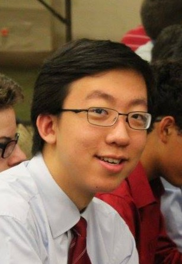
Richard Liu is a Junior at Cypress Bay. He was introduced to math competitions in middle school, and ever since, he's found fun and inspiration in this world of mathematics. FLSAM is a way he furthers his out-of-school math experience, and he looks forward to every math competition the organization participates in! Whether its the AMC, AIME, USAMO, ARML, HMMT, PUMaC, CMIMC, or FAMAT competitions, he believes every competition can be uniquely engaging. When not doing math, Richard enjoys coding, playing the piano and tossing frisbees at people.
George Bentley: Vice President of Competition and Chair of the Curriculum Committee
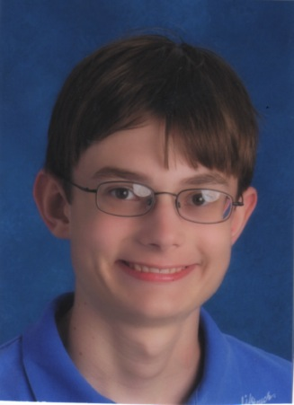George Bentley is a senior at H.B. Plant High School in Tampa, where he is the Vice President of Competitions for the Mu Alpha Theta club. He also is an Eagle Scout. He discovered math competitions in seventh grade through Mathcounts, the AMC 8, and AoPS. Since then, he has enjoyed a number of other math competitions, such as the AMCs, PuMac, ARML, and HMMT. George particularly likes combinatorics and number theory. He also enjoys backpacking, geocaching, surfing the Internet, programming, and trivia. George appreciates the great opportunities FLSAM offers Florida math students and wants to help make FLSAM an even stronger organization.
Varun Singh: Vice President in Charge of Sponsorships
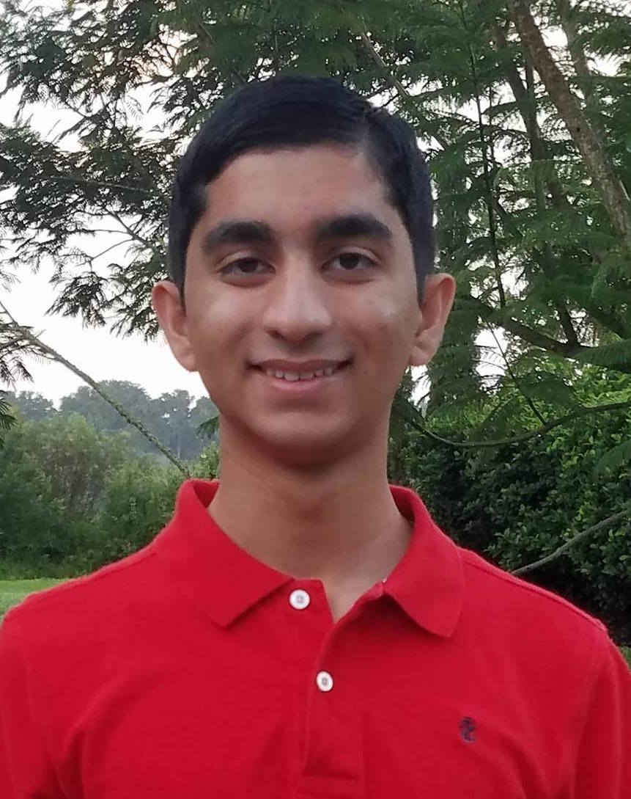
Varun Singh is a senior at Middleton High School.
He is eternally grateful to FLSAM for introducing him to competitions such as ARML, and even more importantly, for connecting him to amazing people who share a similar passion for mathematics, among other things.
He also coaches elementary and middle school students in math. He loves robotics, and competes internationally.
He hopes to go pro one day and become an expert roboticist. When not roboticizing, he enjoys playing his violin and watching too many YouTube videos.
Graham O'Donnell: Region 1 Coordinator, Curriculum Committee
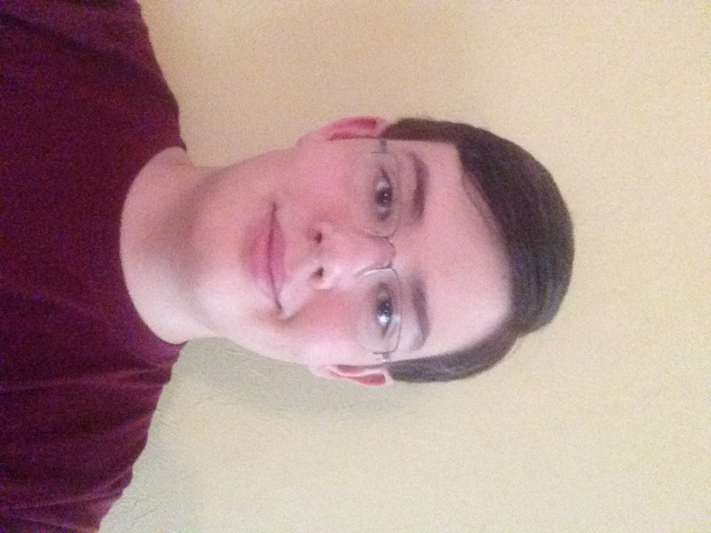
Graham O’Donnell is a junior at Lincoln High in Tallahassee (where he isn’t even a math club officer).
He has competed with FLSAM in 10 out-of-state competitions, starting with ARML in 6th grade. He has won Florida Mathcounts twice and placed 7th at the national competition in 2014.
Graham has also twice received a perfect score on the AMC 10. His favorite subject in math is geometry, but he often places better in number theory.
When not competing, Graham enjoys tutoring aspiring middle schoolers, completing puzzles, riding his bike, and walking his dogs.
Jimmy Qin:
Region 3 Coordinator
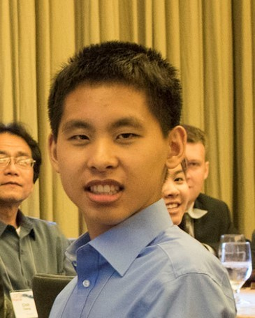
Jimmy Qin is a senior at Seminole High School. Besides math, his favorite subjects include physics, poetry, philosophy, and most subjects which begin with "p."
Unsurprisingly, his favorite area of mathematics is polynomials. (Just kidding! – he isn’t mathematically prejudiced.)
When not doing math or physics or answering life’s persistent questions, he enjoys reading The New Yorker or catching up on those adorable poem-of-the-day emails.
He is proud to represent FLSAM in the Central Florida region.
Keshav Shah:
Region 4a Coordinator
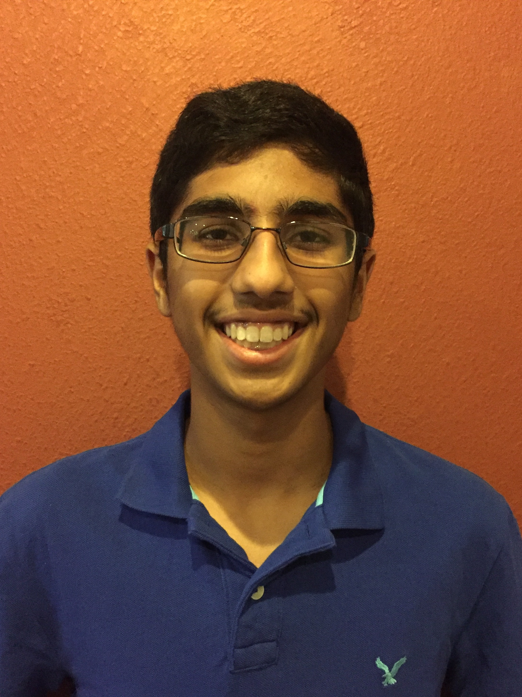
Keshav Shah is currently a senior at King High School.
He enjoys all branches of mathematics and has been participating in math competitions since elementary school, using his exclusion from the school team in second grade as motivation to continually improve.
In high school, he regularly competes in Mu Alpha Theta contests and the AMC, and FLSAM has introduced him to new opportunities such as ARML.
While not doing math or schoolwork, Keshav likes to play basketball, read, root for the New York Giants, solve chess puzzles, and sing (to the annoyance of around him).
He is excited about being a great Region 4a Coordinator this year.
Faraz Masroor: Region 5b Coordinator, Curriculum Committee
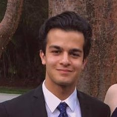
Faraz is a senior at Gulliver Prep and the Vice President (formerly President) of his school's Mu Alpha Theta chapter.
He enjoys computer science, physics, and geometry. He has been with FLSAM since the 8th grade, when he earned the top score on the A2 team.
He has since participated in countless PUMACs and HMMTs and would highly recommend students to pursue these opportunities through FLSAM.
Faraz can be reached through email at faraz_masroor@yahoo.com, and through phone/text at 786 863 5195. He also has a facebook page.
Jackson Blitz:
Region 5a Coordinator
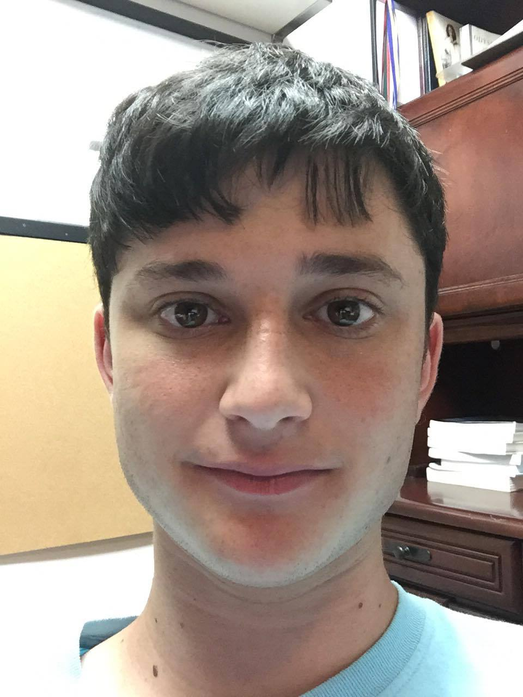
Jackson Blitz is a senior at American Heritage-Plantation. He enjoys mathematics more than life itself. Jackson deeply loves FLSAM and all of the people in it. He believes all problems are trivialized by the Chinese Remainder Theorem. He claims to be good at geometry, but yet only got one question right on the tests at HMMT and PUMaC. Suspicious much?
Josh Kennedy:
Region 4b Coordinator
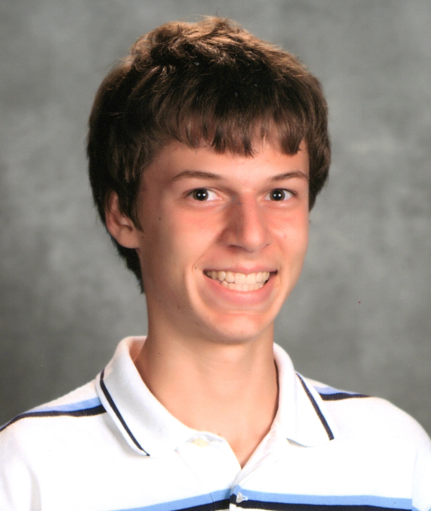
Joshua Kennedy is a senior at Fort Myers High School.
Math has always been his favorite subject, and he participated in his first math competition as a sixth grader.
Mathcounts, in particular, sparked an interest in competitive math, and since then, he has competed in various contests, including the AMC series, ARML, and Mu Alpha Theta.
Combinatorics is his favorite branch of mathematics. As Region 4 Co-Coordinator, he hopes to spread FLSAM around the state and to increase interest in higher level math competitions.
Besides math, he enjoys running cross country and aimlessly surfing the internet.
Brian Reinhart:
Curriculum Committee
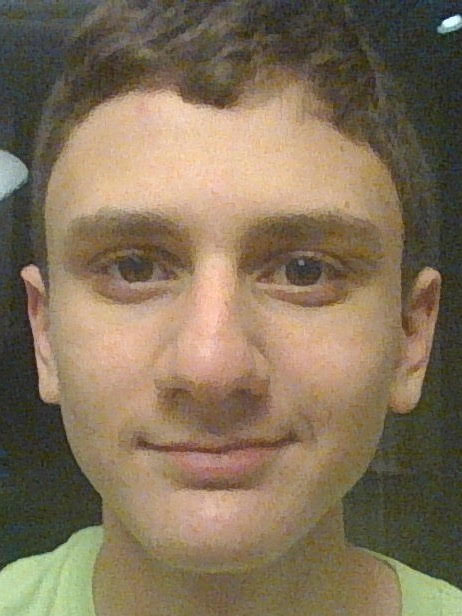
Brian Reinhart is a Junior at Oxbridge Academy. He enjoys doing math and playing games of all kinds.
Brian's favorite branch of mathematics is abstract algebra, but his favorite kind of competition problems are combo problems.
Brian started competing in math competitions in 6th grade, when he first competed in the AMC 10. Since then, he has competed in numerous other math competitions.
Since 2012, as a part of FLSAM, he has been a part of the Florida teams competing at HMMT and PUMaC, as well as the 2016 CMIMC team. Brian also enjoys playing board games and roller blading.
Harish Vemuri:
Curriculum Committee
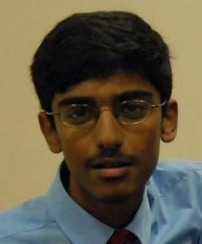
Harish Vemuri is a senior at Buchholz High School. He likes to solve hard math problems in number theory, combinatorics and geometry.
Some of the best sources of such problems are the HMMT, PuMaC and ARML competitions and without FLSAM he would not have had the great experiences of competing at these events.
Outside of math, Harish enjoys playing tennis and chess.